Fact sheet
- Title
- OKUREK (stylised O.K.U.R.E.K — Czech for "of cucumbers")
- Developer
- JamiieDev — solo developer, Prague, Czech Republic
- Origin
- Began as a klauzura (semester) project at FAMU, Prague
- Publisher
- JamiieDev (self-published)
- Release date
- 17 November 2026 (planned)
- Platforms
- Windows (PC) via Steam
- Price
- To be announced
- Players
- Single-player
- Playtime
- 60–90 minutes — designed for one sitting
- Languages
- English, Czech, German, Russian, Polish, Simplified Chinese
- Engine
- Godot 4.5
- Genre
- First-person cozy-horror farming game / atmospheric walking sim
- Content
- Themes of death, terminal illness and body horror — recommended 18+
- Steam
- store.steampowered.com/app/4735450/OKUREK
- Website
- jamiiedev.github.io
- Press contact
- jamiiedev.public@gmail.com
- Social
- Bluesky · X · TikTok · Instagram · YouTube · itch.io
Description
Short
Tend the farm, the chickens, the grieving jars. The trees murmur while the cancer grows with every passing day. OKUREK is a cozy-pickle-horror experience set in the rotting mountains of Czech Switzerland. Preserve what you couldn't save.
Full
Someone dear to you had to leave in a hurry. There was a note on the kitchen table: take care of the cucumbers — you know how important they are to me. Fix the broken bench when you have time. I want to sit there when I get back.
You arrive to golden autumn light. Falling leaves. A coat still on the hook. A coffee cup in the sink. Mining towers on the horizon, half-swallowed by haze.
You plant. You water. You pickle. You keep busy. The farm needs tending. There is always something that needs tending. That is the point.
But something gray and fleshy is growing where it shouldn't. And every morning, there is more of it.
Over four autumn days you work a real farming routine while a geometric, pulsing rot creeps across the land between every dawn. You cannot stop it — only witness it, endure it, and decide what to do with what's left. On the kitchen shelf, the pickled cucumbers have opinions about all of this. So does the deer at the edge of the woods, who only speaks in rhyme.
The land was already sick when you got here. Decades of mining ate the ground out from under the valley; the creek runs the colour of rust. The gray rot in your plots is just the newest wrong thing. OKUREK holds two decays side by side — one personal, one industrial — and asks what you owe a place, a person, and a world you can't fix by tending your own small garden.
Features
- A real daily farming loop — plow, plant, water, harvest cucumbers, collect eggs, seal pickling jars. Repetitive on purpose. Routine is grounding; watching it break is the horror.
- The Rot — a faceted, breathing corruption that spreads every night. Scrape it away and it comes back stronger. Not a puzzle. Something to endure.
- Talking pickles — the sealed jars on your shelf won't shut up. Each has its own philosophy of helplessness: the ranter, the denier, the stoic, the complainer, the philosopher, and the one who just screams.
- A deer that speaks in rhyme and knows more than it will say plainly.
- Two concurrent decays — one personal, one industrial. The valley was being consumed before you arrived.
- Two endings — one about preservation, one about acceptance.
- No death screen, no fail state. This is a story about inevitability, not skill.
- A boss fight against a car-sized corrupted cucumber. It earned it.
- PS1-era low-poly with a custom vertex-jitter "stop-motion" shader that makes the whole world tremble like it's alive — except the dead things, which don't move at all.
History
OKUREK started from something small: the developer likes pickles and canning jars, and wanted to make a game about growing cucumbers and keeping chickens. That cozy premise became a vehicle for two heavier subjects — the death of someone close, and the systemic poisoning of North Bohemia under 1980s brown-coal and uranium extraction.
It is built solo in Godot and began as a klauzura (semester) project at FAMU in Prague. Period detail was researched from archival photographs of the leach-mining fields and checked with a regional specialist for historical and environmental authenticity; the industrial structures in the game are an artistic interpretation where documentation no longer exists.
Cozy horror inspired by Color Out of Space, Annihilation, and No One Lives Under the Lighthouse. Plays like What Remains of Edith Finch, Paratopic, Iron Lung, Squirrel Stapler and Anatomy.
Screenshots
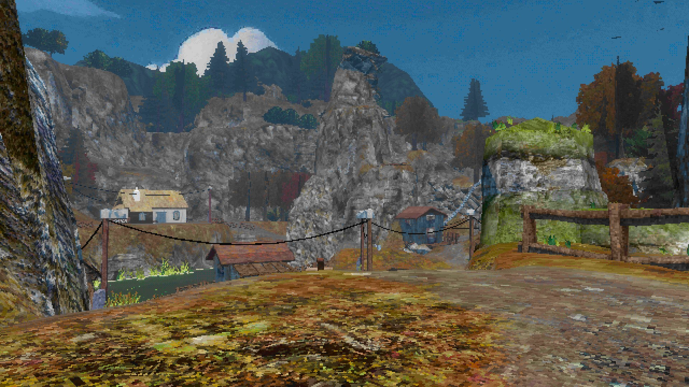
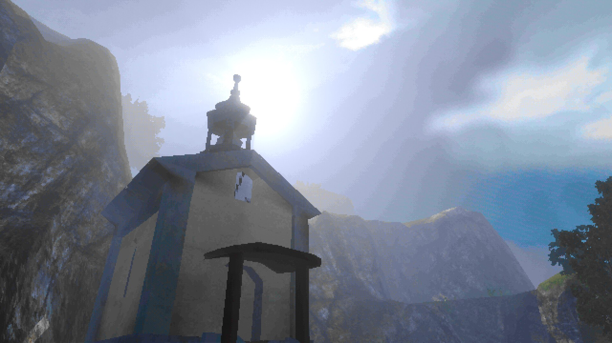
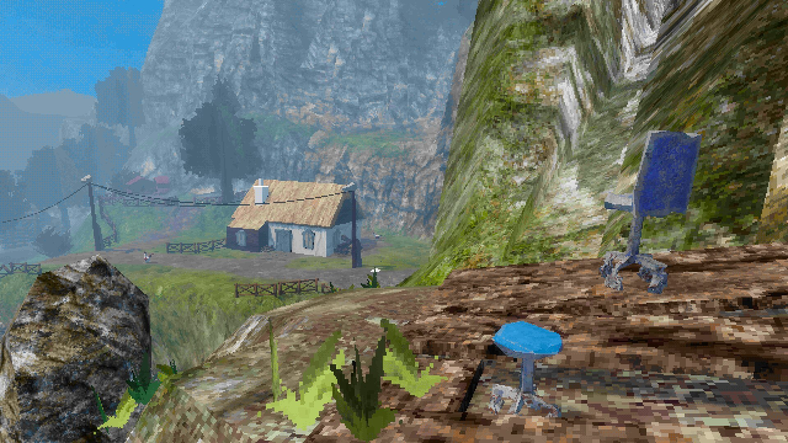
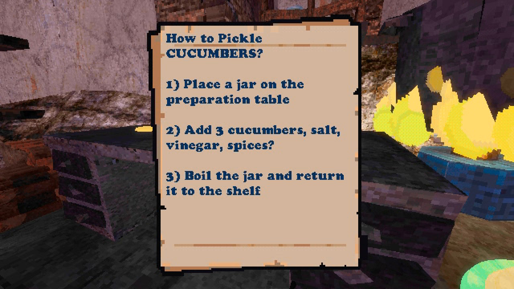
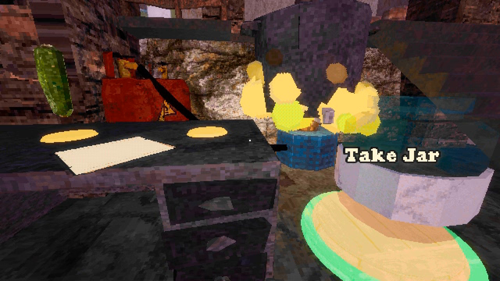
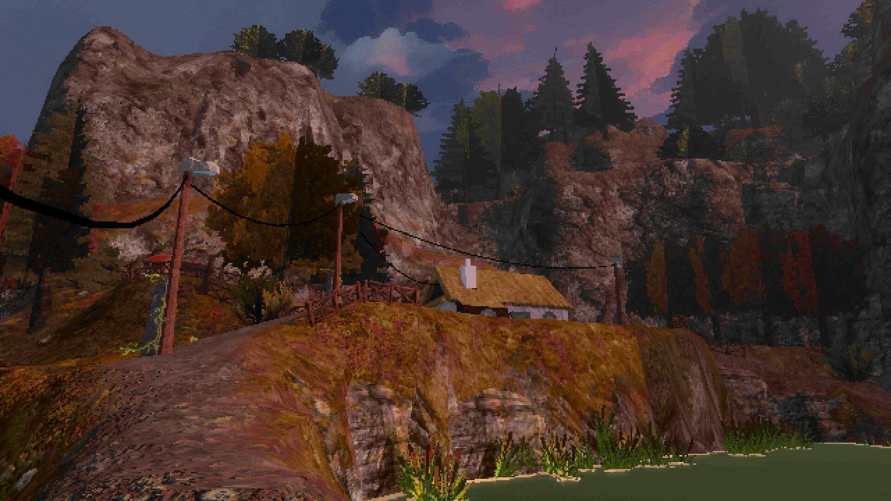
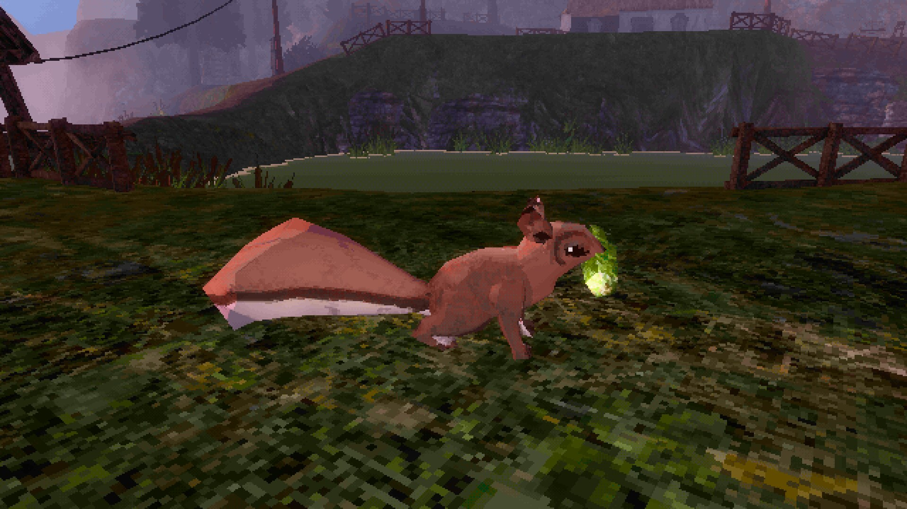
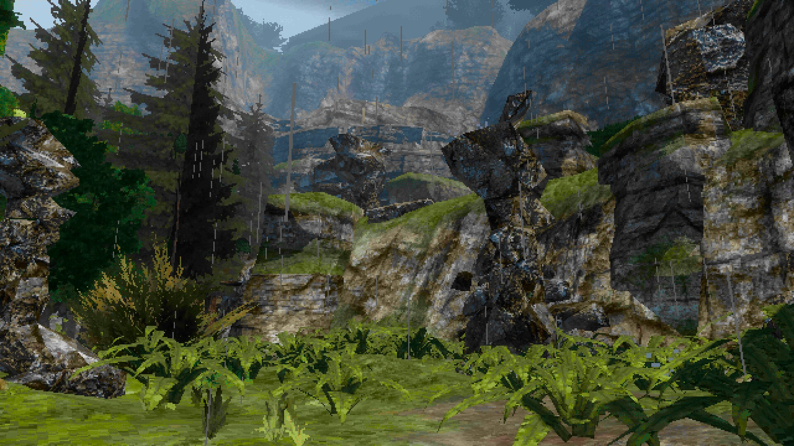
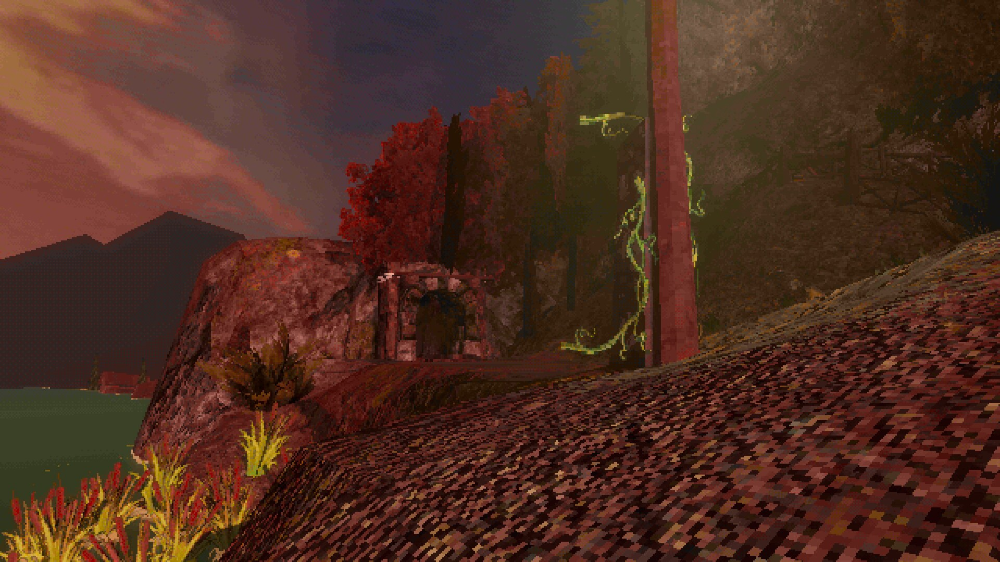
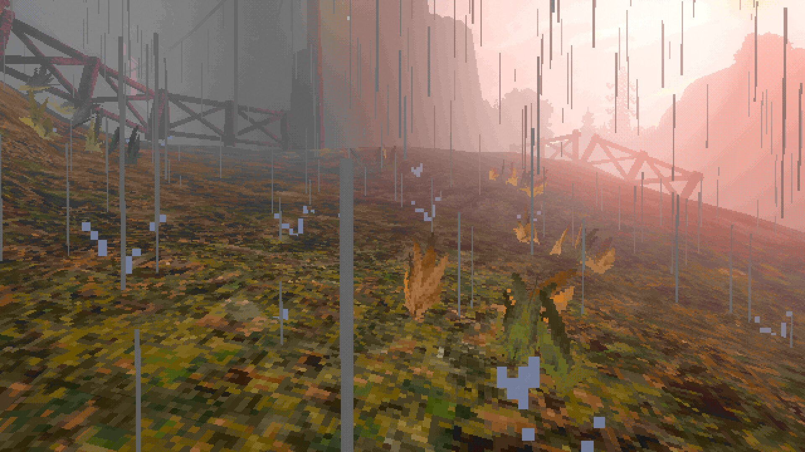

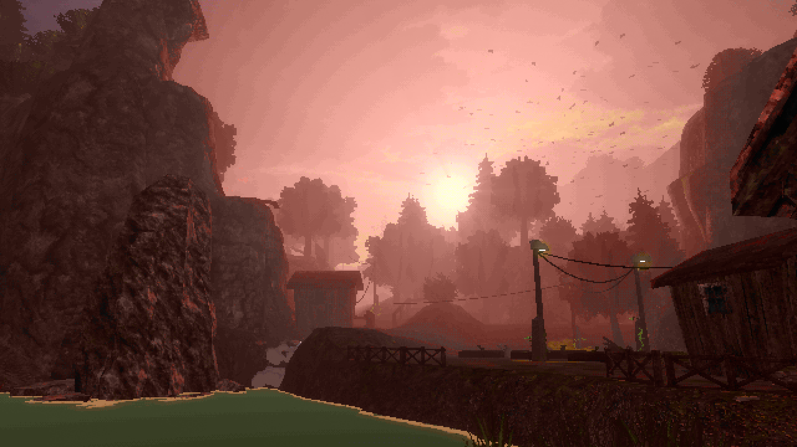
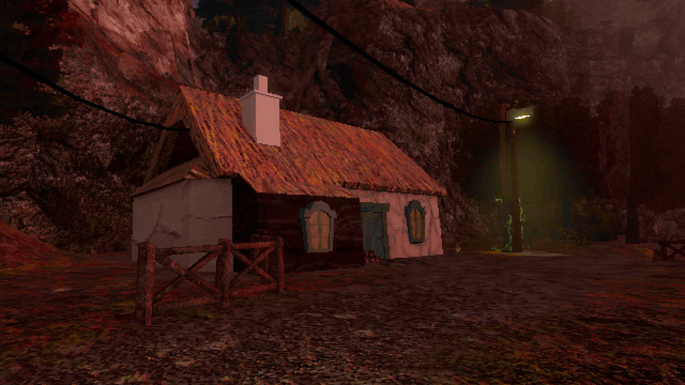
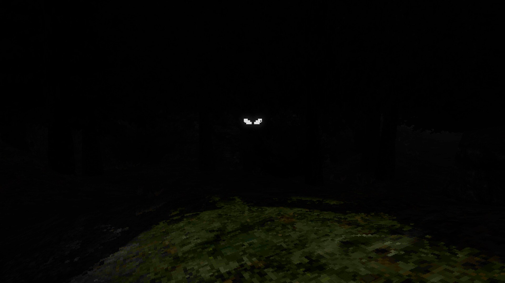
Click any image for full resolution. The two pickling shots are pixel-scaled from a 360p capture; the rest are 1920×1080, captured in-engine from the current build. A gameplay trailer will be added here when it's ready.
GIFs & loops
Silent looping clips for social posts and articles. Each comes as an optimised GIF and a much smaller MP4 — use the MP4 wherever the platform accepts video (it's roughly 5× lighter). Captured from a work-in-progress build.
{kind=link}
{kind=link}
{kind=link}
{kind=link}
{kind=link}
Logo & key art
{kind=link}
{kind=link}
{kind=link}
{kind=link}
{kind=link}
Credits
Made by
Created by JamiieDev
Made at FAMU, Prague
Consultation
Game design — Michal Berlinger
Environmental & historical — Monika Kurešová
Playtesting thanks to the FAMU community
Downloads & permissions
⬇ Full press kit (.zip) — logo, key art, poster, banner, icon, all 14 screenshots, the 5 GIF/MP4 loops, and this fact sheet as text.
You have blanket permission to use OKUREK's name, logo, screenshots, key art and video captured from the game in articles, reviews, videos and streams — including monetised ones. No need to ask. If you make something, a link is always appreciated.